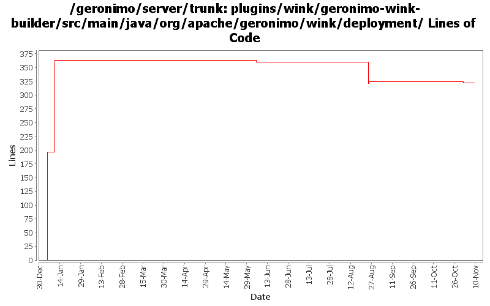

[root]/plugins/wink/geronimo-wink-builder/src/main/java/org/apache/geronimo/wink/deployment

| Author | Changes | Lines of Code | Lines per Change |
|---|---|---|---|
| Totals | 8 (100.0%) | 473 (100.0%) | 59.1 |
| genspring | 3 (37.5%) | 411 (86.9%) | 137.0 |
| xuhaihong | 3 (37.5%) | 58 (12.3%) | 19.3 |
| djencks | 1 (12.5%) | 3 (0.6%) | 3.0 |
| violalu | 1 (12.5%) | 1 (0.2%) | 1.0 |
Change deploympent exception to warning sometimes if application doesn't contain webservices, may end-user gets deployment error coz of web application compile with low level java compiler such as jdk 1.4.
1 lines of code changed in 1 file:
GERONIMO-6204 Decouple OpenWebBeans from web container
1 lines of code changed in 1 file:
1. Use customized DeploymentConfiguration to search wink-alternate-shortcut.properties
2. Use a delegating bundle classloader to make sure all the resources from wink-server bundle could be found
22 lines of code changed in 1 file:
Format wink integration codes, no function change
35 lines of code changed in 1 file:
Just use wink and openejb-builder as an exercise to use findbug in my IDE.
1 lines of code changed in 1 file:
XBEAN-162 update to genericed xbean-finder apis
3 lines of code changed in 1 file:
GERONIMO-5096 adding initial wink integration code. Though tck are 100% passed locally, we need add following
1, scan jaxrs resouces based on annotation.
2, exposing EJB as service support.
3, exposing OWB bean as service support.
according to Spec.
Current tck cases only cover pojo with Application configured in web.xml.
214 lines of code changed in 1 file:
GERONIMO-5096, adding the wink integration boilerplate files.
196 lines of code changed in 1 file: